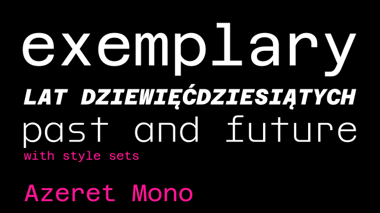
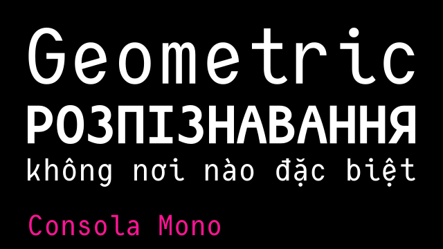
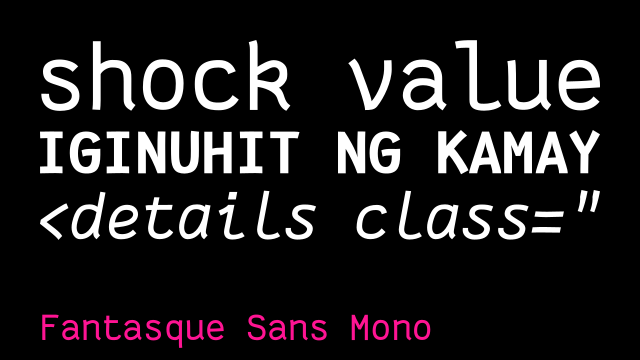
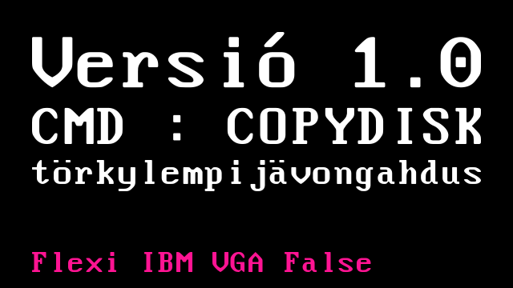
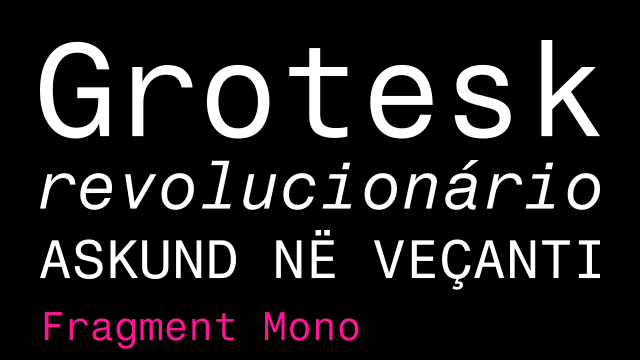
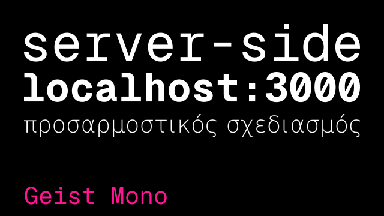

These fonts' glyphs all have the same width! These first appeared as necessities for typewriters and computer monitors with limited capabilities, and now they're used for writing code and in terminal emulators, as well as just. making something look technological.
basically all of them (12)
Some of these fonts are great for coding and terminal use! Others really aren't, mostly just for display usage and pretty or interesting looking text. Sorted alphabetically.
Azeret Mono (OFL)
by Martin Vácha and Daniel Quisek of Displaay
Azeret is a proportional font family by Displaay, designed to look like something a computer interface could use in the past or future. Looks like OCR-B kinda. This though is the Mono version, which is free and licensed under the OFL! It has a bunch of idiosyncracies that i think make it look neat and unique: a wide "a" hook, a small-headed "e" that looks like a serif font and a large x height. I also used to use this in my status.cafe page.
Cascadia Code (OFL)
by Aaron Bell of Microsoft
Cascadia Code is the default font for Visual Studio Code and Windows Terminal, designed
by Microsoft with a bunch of code ligatures and arrows and other characters like icons
and stuff. It's variable from Ultra-Light to Bold, with a style set for italics that
makes it look like cursive text! I don't really see why that would be good for code but
i'm not complaining h
It looks very angular, not exactly my thing for codemaking, but it's cool for display.
Also this is a moment when a big company makes something open source, so it's cool but yk.
It's Microsoft, with their crappy business practices and monopolies and capitalism and that AI Recall
thing they almost put in Windows 11. And the entirety of Windows 11.
Consola Mono (OFL)
by Wojciech Kalinowski
This font actually looks really neat, even though i don't use it often if at all. It has a geometric, circular feel in some letters like P and R, the curved A kinda throws me off. The lowercase characters also look neat, especially the tilted e.
Courier Prime (OFL)
by Alan Dague-Greene
The Courier we all now and love (?) was made by Howard Kettler for IBM in the 50's (they didn't trademark the name so it's public domain by now!), and it's in a ton of computers. It's also basically the standard font for making screenplay scripts! This though, Courier Prime, is a more refined version that is much easier on the eyes, as well as with real italics unlike the original Courier.
They even made a sans serif version and a code version with different glyphs and line height!!! (theyre basically the same so only one is shown here)

DM Mono (OFL)
The DM in the name stands for DeepMind, which is a subsidiary of Google who works on AI! I don't really need to tell you why AI is particularly concerning nowadays h The font looks like a general future-y font. Curved corners in some places and the little cut in the "y", which. sure. Right angles in other places, semicircular curves which i like, and it only goes from Light to Medium. I'd prob give it a 6.5 out of 10.
Drafting* Mono (OFL)
This is the only monospaced font indestructible type has made so far, and it's pretty good. It's meant to replicate the feel of typewriter fonts without being. boring. And it does that pretty well, although the all serifs in the capitals throw me off for some reason. But the italics are very typewriter-y so that's nice. The variable version costs 10 dollars, but the static fonts are already great, and free!
Fairfax HD (OFL)
by Rebecca Bettencourt aka KreativeKorp
This font looks kinda neat for display, not really good for code, but it was designed for constructed languages. It encodes characters for a ton of conscripts like Tengwar, D'ni, Klingon and sitelen pona according to the Under-Conscript Unicode Registry (UCSUR), so it's a pretty big font. It is very geometric bc it's based on the original bitmap Fairfax font, made with a 6x12 grid.
Fantasque Sans Mono (OFL)
by Jany Belluz
This is a programming font with some squiggly and droopy lines in places, a lot of handwriting feel in it. I don't really vibe with it, the x height is a bit too tall and the details a bit distracting, like the loop in the k, though you can turn it off with a style set. But i can see myself getting used to this if i wanted to. Does certainly look soft on the eyes.
Flexi IBM VGA (CC BY-SA 4.0)
by int10h
This font is a remake of the iconic system font used in IBM PC's with VGA compatibility, made with a 9x16 grid. Though this one is rounded, which might seem inaccurate, but the original VGA font on a CRT was never perfectly square anyways. And this also looks nicer to the eyes at bigger sizes, with the curves barely noticeable at smaller ones. Also, there are 2 variations, True and False, which makes the "pixels" square or accurate to a CRT, and (437), which only has the characters in the CP437/DOS encoding.
If you want the regular straight edged fonts, as well as A TON of other fonts from old computers, int10h has a huge collection of them for you to do whatever you want. If you want a smoothed out version but without curves, only straight lines, check out Nouveau IBM by Arto Hatanpää!
Fragment Mono (OFL)
by Wei Huang
This font, made by Wei Huang, is a version of Nimbus Sans (which itself is a remake of Helvetica as you can see), with its characters extended and modified to become a monospaced font. It kinda has the feel of the latin characters in mono CJK fonts, which i like. It has some very pretty arrows too. Not optimal for coding imo but perfect for making something look sleek and technological.
Geist Mono (OFL)
by Vercel
'Tis another corporate font, this time for Vercel, who provide cloud platform services, and also maintain the Next.js framework, which is neat! This font has the same feel as DM Mono, with some corners here and there, and an oddly circular hook on the a. There is also a variable version available!
(more fonts soon)
↑ top of listAPL fonts (5)
APL is a. really old programming language, developed in 1966 and first popularized by IBM with their System/360 computer systems. And back then, cathode ray tubes weren't really a thing, so physical terminals ― basically automated typewriters plugged into a computer ― were used for output. And since APL has a bunch of special glyphs, originally made by striking 2 characters on top of each other on a typewriter, that represent entire functions, APL specific fonts have to be made that have these glyphs, and that also look coherent in the context of APL.
APL2741 Unicode (Public Domain)
by abrudz
This is a version of the face used in the type ball made for terminals like the IBM 2741 that can type APL characters. Not the best for screen usage but it's super neat and historical. The one shown here specifically is a more expanded version by abrudz of a font originally made by Adrian Smith.
{kind=link}
APL385 (Public Domain)
by Adrian Smith
This font, made by Adrian Smith with APL software vendors in the late 80s, as APL evolved and new characters and interpreters appeared. This has a more rounded, softer look.

Other (probably better) fonts i recommend are APL386 by abrudz,
with some redrawn and new characters, and BQN386 by dzaima,
made with another APL-family language in mind, BQN. Again with some redrawn and new glyphs.
Oh, and also APL333 also by Adrian, which is a proportional (non-monospaced)
version of APL386 if you're into that. These 3 fonts are also public domain and all basically look exactly like the specimen i showed, so i'm not showing them.
Other fonts for APL are in this article in the APLwiki, some of the fonts there also appear in this page.
↑ top of list